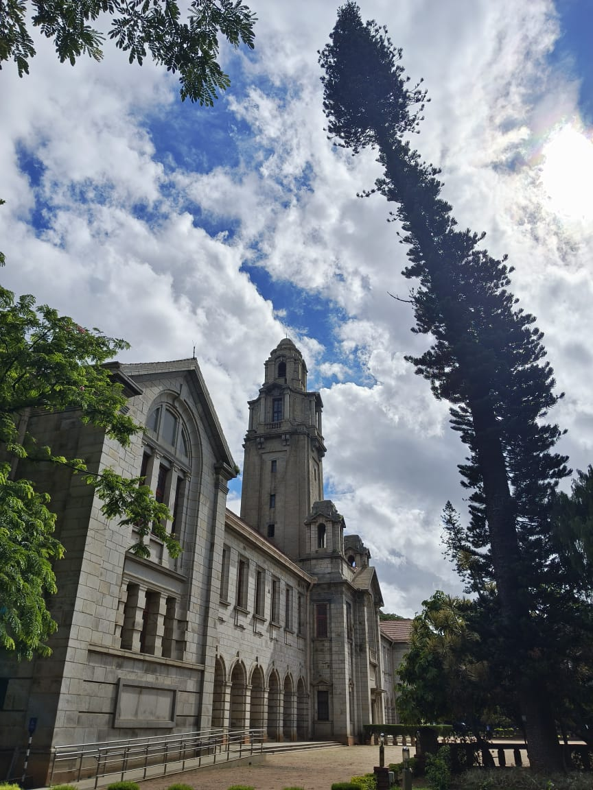
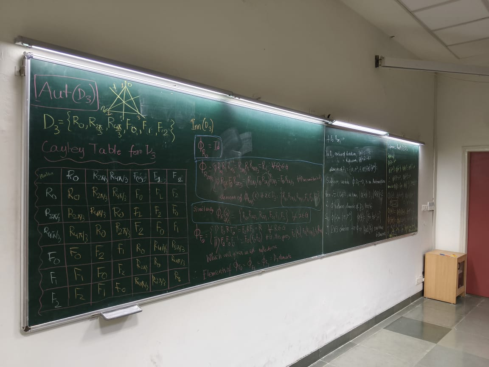
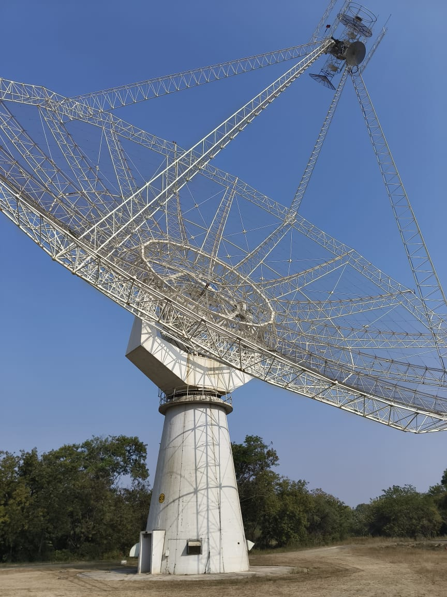
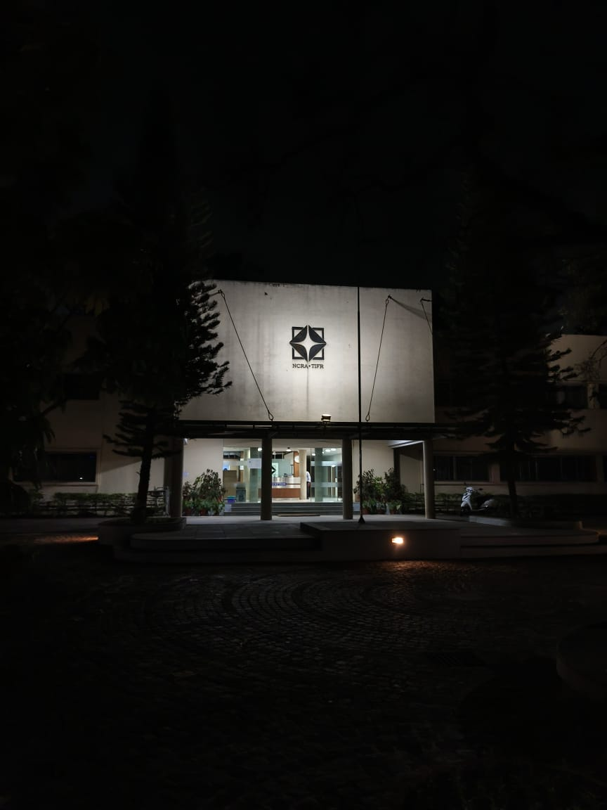
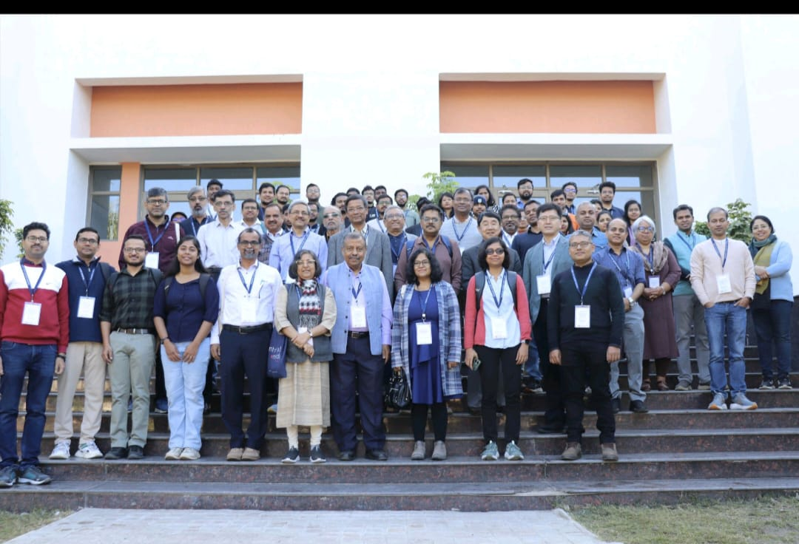
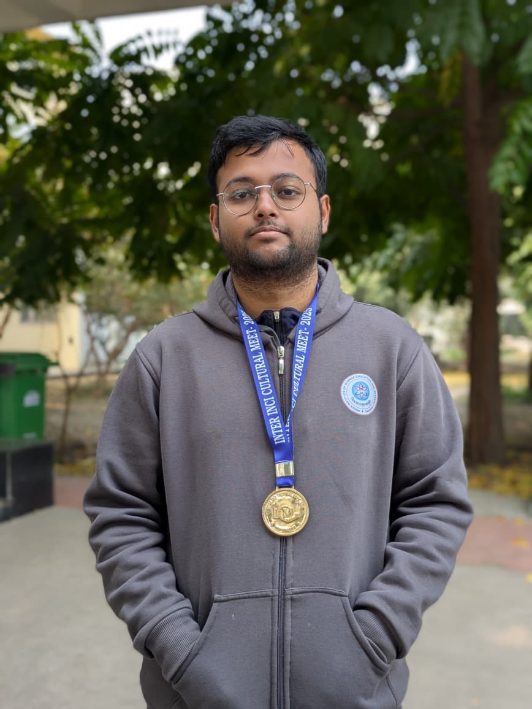
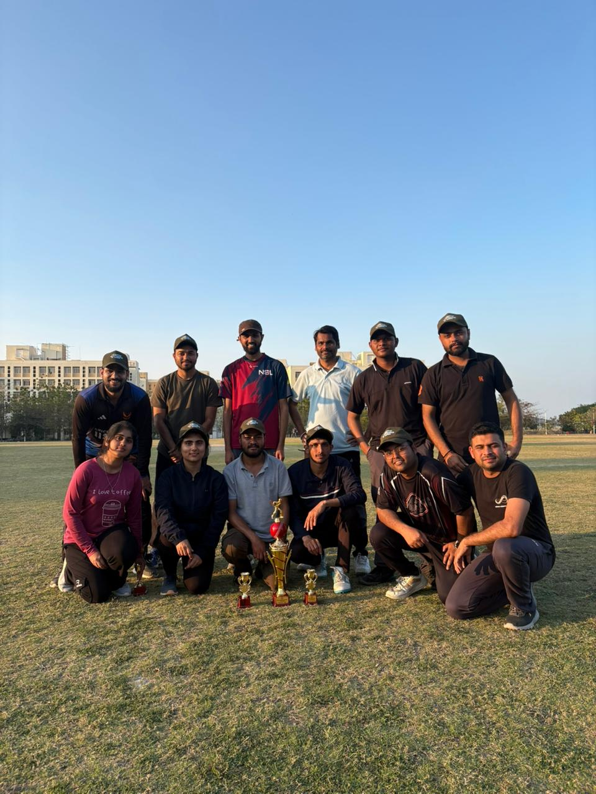

ALL
ACADEMIC
CONFERENCES
CAMPUS
ACHIEVEMENTS
▦ ▤

01 —
Indian Institute of Science, Bengaluru

02 —
Who says Physics people do not do Math?

03 —
GMRT during RAWS December 2023

04 —
NCRA-TIFR Main Building, Pune

05 —
Group Photo of International Conference on Quantum Materials and Emerging Concepts 2025 held at IISER Bhopal

06 —
Inter-INCI Cultural Meet 2025 Quiz Gold Medal Winner

07 —
Finalist Team for Dept. of Physics IISERB Cricket Tournament
“Physics is not just a subject, it’s a way of seeing.”